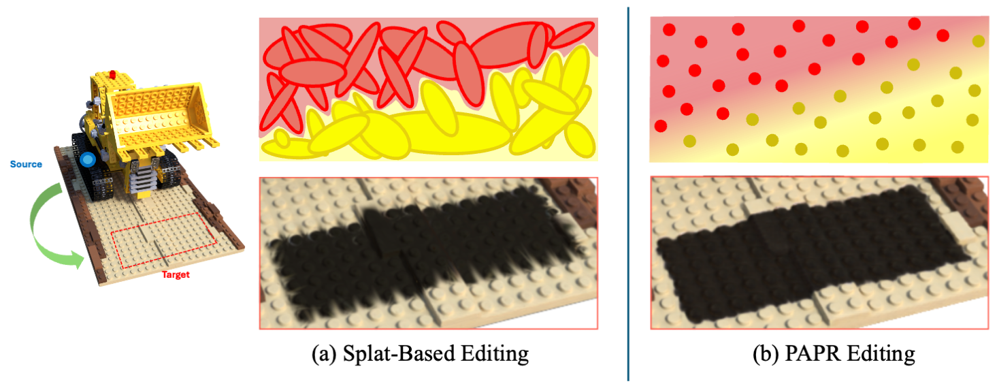

Hi there! I am a Ph.D. student in the APEX Lab at Simon Fraser University, advised by Ke Li. Before that, I earned my B.Sc. in Computer Engineering at Amirkabir University of Technology in Tehran, Iran, with a double major in Electrical Engineering.
My research focuses on:
- 3D neural rendering — point-based reconstruction, rendering, and editing of 3D scenes
- Generative modeling — IMLE, diffusion, and world models for image synthesis and control
- Efficient & applied ML — deploying ML/LLM systems under tight compute constraints
Email / Google Scholar / Github / LinkedIn / Twitter
- Two papers — Tackling Misattribution in 3D Intrinsic Decomposition and P-CORE — accepted to ECCV 2026!
- WIMLE accepted to ICLR 2026.
- Selected for the Lab2Market National Commercialization Program (Validate Stream), 2025.
- PAPR accepted as a Spotlight 🌟 at NeurIPS 2023.

Alireza Moazeni, Shichong Peng, Yanshu Zhang, Chirag Vashist, Ke Li
ECCV, 2026
arXiv /
@inproceedings{moazeni2026misattribution,
title={Tackling Misattribution in 3D Intrinsic Decomposition via Proximity Attention Point Rendering},
author={Alireza Moazeni and Shichong Peng and Yanshu Zhang and Chirag Vashist and Ke Li},
booktitle={European Conference on Computer Vision (ECCV)},
year={2026}
}
TL;DRResolving misattribution in point-based 3D intrinsic decomposition
Intrinsic PAPR identifies and fixes the misattribution issue in point-based inverse rendering,
where individual primitives learn incorrect appearance despite producing correct aggregated
renders. Using proximity attention point rendering for direct per-point supervision, it enables
accurate, view-consistent albedo and shading editing.

Yanshu Zhang, Shichong Peng, Mehran Aghabozorgi, Alireza Moazeni, Ke Li
ECCV, 2026
Project Page / Paper /
@inproceedings{zhang2026pcore,
title={P-CORE: Self-Supervised Surface Consistency for Point-Based Neural Editing},
author={Yanshu Zhang and Shichong Peng and Mehran Aghabozorgi and Alireza Moazeni and Ke Li},
booktitle={European Conference on Computer Vision (ECCV)},
year={2026}
}
TL;DRSupervise surface prediction of deformed points by the deformed surface
P-CORE lets attention-based point representations undergo large non-rigid deformations
without holes or tears by enforcing that the predicted surface stays consistent before
and after random deformations, enabling zero-shot editing with substantially fewer artifacts.

Mehran Aghabozorgi, Alireza Moazeni, Yanshu Zhang, Ke Li
ICLR, 2026
Project Page / Code / arXiv /
@inproceedings{aghabozorgi2026wimle,
title={{WIMLE}: Uncertainty-Aware World Models with {IMLE} for Sample-Efficient Continuous Control},
author={Mehran Aghabozorgi and Alireza Moazeni and Yanshu Zhang and Ke Li},
booktitle={The Fourteenth International Conference on Learning Representations},
year={2026}
}
TL;DRMulti-modal world models with uncertainty-aware policy learning for model-based RL
WIMLE learns stochastic, multi-modal world models using IMLE and weights synthetic
transitions by predictive confidence, achieving state-of-the-art sample efficiency
across 40 continuous-control tasks in DeepMind Control, HumanoidBench, and MyoSuite.

Yanshu Zhang*, Shichong Peng*, Alireza Moazeni, Ke Li
NeurIPS, 2023 (Spotlight 🌟)
Project Page / Code / arXiv / Video /
@inproceedings{zhang2023papr,
title={PAPR: Proximity Attention Point Rendering},
author={Yanshu Zhang and Shichong Peng and Alireza Moazeni and Ke Li},
booktitle={Thirty-seventh Conference on Neural Information Processing Systems},
year={2023}
}
TL;DRReconstruct and render point clouds using attention
PAPR is a point-based surface representation that uses proximity attention to
interpolate between nearby points to rays for rendering high-quality images,
enabling non-volume-preserving geometry deformation by directly adjusting point
positions, and, unlike 3D Gaussian Splatting, it avoids creating holes while
preserving texture details after deformation.

Shichong Peng, Alireza Moazeni, Ke Li
NeurIPS, 2022
Paper / Code /
@inproceedings{peng2022chimle,
title={CHIMLE: Conditional Hierarchical IMLE for Multimodal Conditional Image Synthesis},
author={Shichong Peng and Alireza Moazeni and Ke Li},
booktitle={Neural Information Processing Systems (NeurIPS)},
year={2022}
}
TL;DRHigh-fidelity multimodal conditional image synthesis with hierarchical IMLE
CHIMLE generates diverse, high-fidelity outputs for conditional image synthesis without the
mode collapse of GANs. By introducing conditional hierarchical sampling into IMLE, it produces
high-quality images with far fewer samples, improving FID by 36.9% on average over the prior
best IMLE method across night-to-day, 16× super-resolution, colourization, and decompression.
- Lead an LLM-powered, agentic pipeline (IoT2Cloud API) that turns natural-language requests into UI components via retrieval-augmented generation and tool use, with a custom evaluation framework.
- Build transformer-based, on-device NLP/NLU for a conversational voice assistant — speech recognition, intent classification, semantic parsing — with fine-tuning, distillation, and quantization for tight latency.
- Own the end-to-end ML lifecycle — data analysis, training, A/B testing, scalable serving, and MLOps — with the Python stack, PyTorch, Docker, and AWS; lead and mentor a small cross-functional team.
- Built and launched Maya i-Box, an intelligent embroidery system converting photos into optimized stitch files; owned the full computer-vision pipeline in C++ on embedded hardware.
- Designed graph-based optimization and computational-geometry algorithms for shape decomposition, delivering production-grade industrial automation.
- 2025 — Lab2Market National Commercialization Program (Validate Stream), Canada
- 2023 — Helmut & Hugo Eppich Family Graduate Scholarship, Simon Fraser University
- 2020 — Top 5% in Computer Engineering & IT, Amirkabir University of Technology
- 2015 — Top 0.15% in the Iranian Nationwide University Entrance Exam (~250,000 applicants)
|
© 2026 Alireza Moazeni |